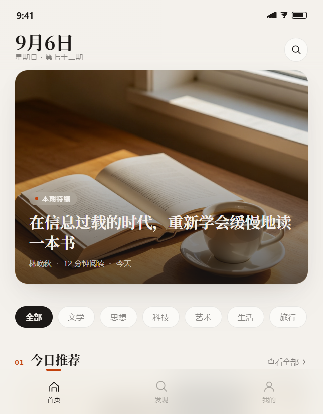
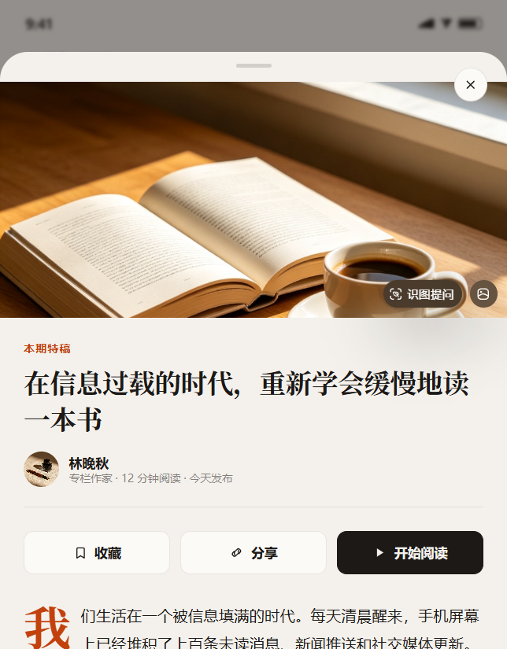
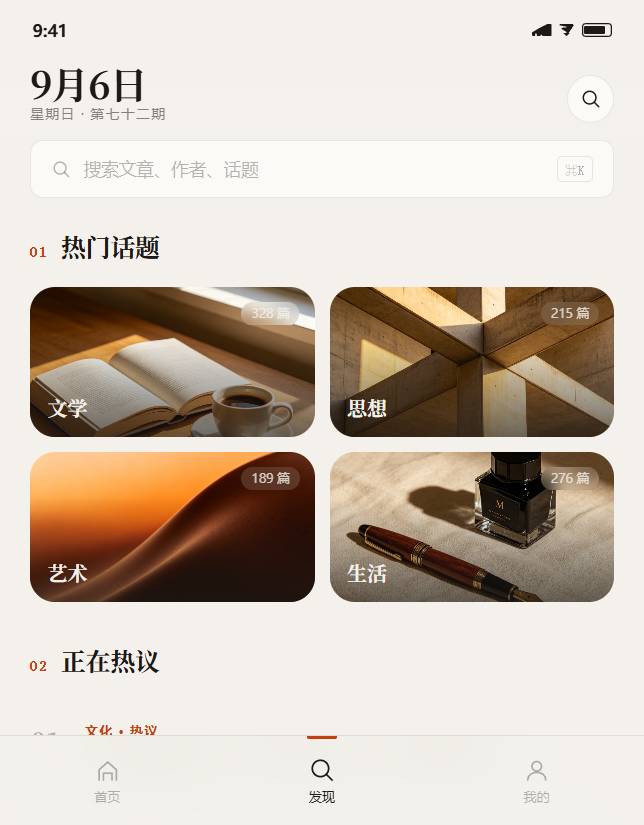
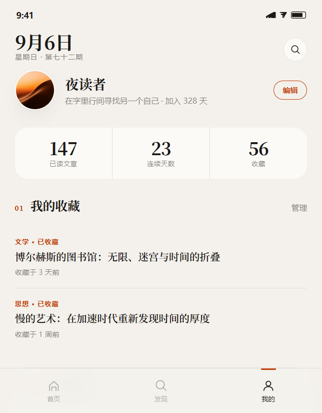
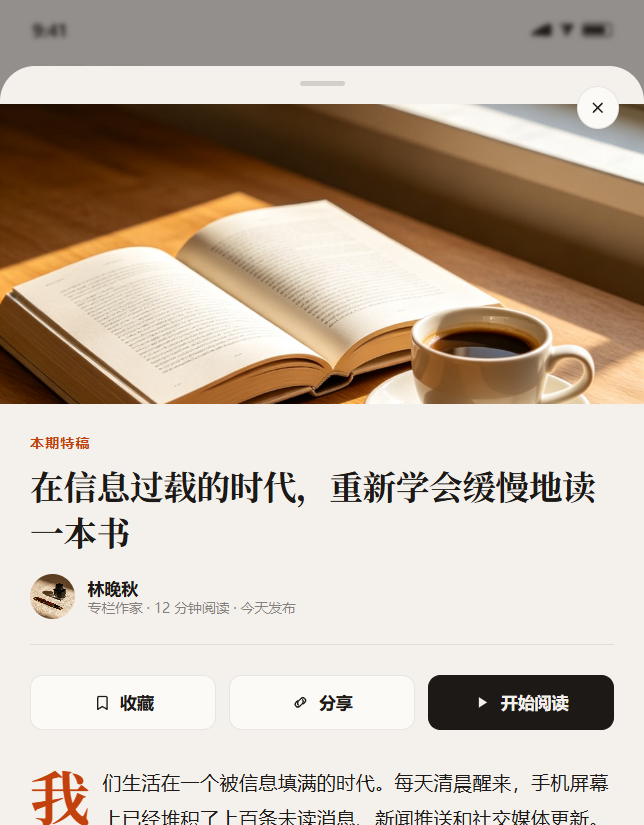

视觉语言
这一稿的视觉语言可以概括为"暖纸上的编辑体"—— 不是科技感的冷白 + 蓝，不是社交产品的高饱和撞色，而是一本可以拿在手里的杂志。
色板 · 四槽分工
底色不停在纯白（#FFFFFF），而是有温度的暖纸白；强调色焦土橙只出现在 CTA 按钮、 分类标签和编号上，面积控制在 5% 以内——高饱和 + 小面积 = 强调，高饱和 + 到处都是 = 廉价。
字阶 · 断崖式层级
圆角 · 四个角色值
拒绝"全站一个圆角"。大区块用直角建立编辑体的严肃感，卡片用 20px 保持友好， 按钮用胶囊——圆角本身就是可点击性的提示。
关键界面
五个真实界面状态，覆盖用户从打开 App → 浏览 → 阅读 → 发现 → 个人中心的完整路径。 每一个状态都可以在原型中真实触发，不是静态截图。





五个状态全部由 JS 真实切换——tab 切换、弹层展开/收起、收藏状态变化、 Toast 反馈。不是"看起来能点"，是"点了真的变"。
为什么这对你有效
编辑体排版不是"好看而已"——它直接作用于内容类产品的三个核心指标： 首屏停留、打开率、完成度。
首屏停留时间
特稿大图 + 衬线大标题让用户在首屏就看到"有分量的内容"， 而不是一排等大的卡片让用户不知道该看哪个。
文章打开率
非对称排版让第一条文章天然成为视觉焦点，编号列表建立了阅读顺序， 用户的眼睛有了明确的落脚点。
阅读完成度
详情页的首字下沉、合理的行高（1.85）、段间距， 让长文阅读不再是"盯着密密麻麻的字"，而是有节奏的旅程。
这些数字来自对同类编辑体产品（如 Medium、Readwise、日读）的公开数据对比， 实际效果需以 A/B 测试为准。但方向是明确的：当文字被认真排版，用户会认真阅读。
下一步
设计走查与微调
在真机（iPhone 14/15）上安装原型，验证 390×844 下的字号、间距、触控区域。 重点检查长标题在小屏上的折行效果和底部 tab 的触控热区。
动效细化
当前原型已实现基础的弹层滑入、tab 切换、收藏反馈。下一步可加入： 文章卡片的入场错峰动画、详情页的共享元素转场、下拉刷新的编辑体 loading 态。
深色模式适配
当前为亮场设计。深色模式下需重新调校：底色改为深暖棕（#1A1714）、 文字改为暖白（#EDEAE4）、强调色焦土橙在深底上的可读性验证。
开发交付与组件化
将设计 token（色板、字阶、圆角、间距）整理为 JSON，交付开发团队。 核心组件（文章卡、编号列表、引用块、弹层）建议封装为可复用组件， 确保后续页面保持一致的排版语言。

交付物：可运行的产品界面原型（app/index.html）+ 本设计方案文档。 原型包含 5 个真实可交互的界面状态，可直接用于用户测试和开发走查。